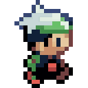

Bem-vindo(a) à LevelUp Reviews! Somos um site que oferece análises de jogos com humor e poesia para reimaginar o universo gamer.
Nosso projeto nasceu numa aula de desenvolvimento web — e com energia de barzinho entre amigos, surgiu essa ideia maluca e maravilhosa: criar um site só nosso sobre jogos.
Cada review aqui carrega a personalidade de quem o escreveu. A gente fala de mecânica, narrativa, IA e o que mais der vontade. Dos clássicos aos lançamentos, nossa missão é fazer você ver os jogos com outros olhos.
Explore as seções acima — reviews, memes, tier list… e fique ligado nas novidades. Nos vemos pelas fases da vida, jogador!

🎉 Obrigado por enviar seus dados! Você será redirecionado... 🎮